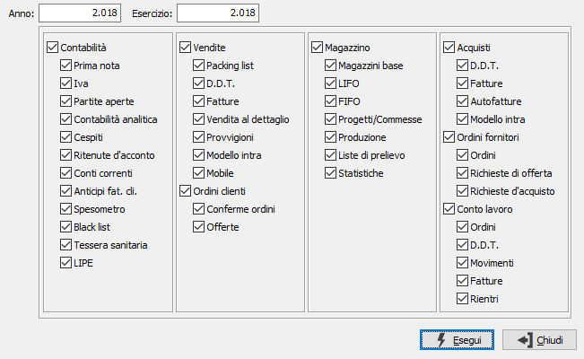

Inizializzazione tabelle
Il programma di servizio consente l'azzeramento dei valori presenti nelle tabelle selezionati per l'anno fiscale e l'esercizio richiesto.

L'attivazione delle caselle modulo (contabilità, vendite, ecc.) è relativa ad i moduli installati; ad ogni casella modulo corrispondono delle caselle relative alle varie movimentazioni. L'inizializzazione viene effettuata anche a livello di protocolli e progressivi per le tabelle selezionate.